1. Complete the following statements:

(i) Probability of an event E + Probability of the event 'not E' = ___.
1
(ii) The probability of an event that cannot happen is ___. Such an event is called
___.
0, Impossible event
(iii) The probability of an event that is certain to happen is ___. Such an event is
called ___.
1, Sure or Certain event
(iv) The sum of the probabilities of all the elementary events of an experiment is
___.
1
(v) The probability of an event is greater than or equal to ___ and less than or equal
to ___.
0, 1
2. Which of the following experiments have equally likely outcomes? Explain.
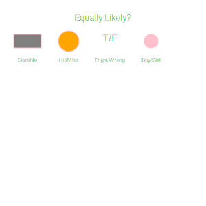
(i) A driver attempts to start a car. The car starts or does not start.
Not equally likely. Depends on car condition.
(ii) A player attempts to shoot a basketball. She/he shoots or misses the shot.
Not equally likely. Depends on player's ability.
(iii) A trial is made to answer a true-false question. The answer is right or wrong.
Equally likely. Only two possibilities.
(iv) A baby is born. It is a boy or a girl.
Equally likely.
3. Why is tossing a coin considered to be a fair way of deciding which team should get the
ball at the beginning of a football game?
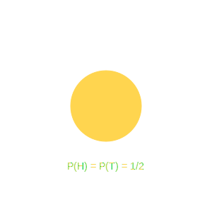
When we toss a coin, the possible outcomes are only two, Head or Tail, which are equally
likely outcomes. Therefore, the result of an individual coin toss is completely unpredictable.
It is a fair method.
4. Which of the following cannot be the probability of an event? (A) 2/3 (B) -1.5 (C) 15%
(D) 0.7

Probability of an event cannot be negative or greater than 1.
Here, -1.5 is negative.
(B) -1.5
5. If P(E) = 0.05, what is the probability of 'not E'?

We know that P(E) + P(not E) = 1.
P(not E) = 1 - P(E) = 1 - 0.05 = 0.95.
0.95
6. A bag contains lemon flavoured candies only. Malini takes out one candy without looking
into the bag. What is the probability that she takes out (i) an orange flavoured candy? (ii) a lemon
flavoured candy?
(i) Bag contains only lemon candies. So, orange candy cannot be picked.
Number of favourable outcomes = 0. Probability = 0.
(ii) Event of picking lemon candy is a sure event.
Probability = 1.
(i) 0, (ii) 1
7. It is given that in a group of 3 students, the probability of 2 students not having the
same birthday is 0.992. What is the probability that the 2 students have the same birthday?
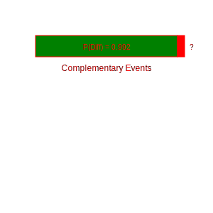
P(Same birthday) + P(Different birthday) = 1.
P(Same) = 1 - 0.992 = 0.008.
0.008
8. A bag contains 3 red balls and 5 black balls. A ball is drawn at random from the bag.
What is the probability that the ball drawn is (i) red ? (ii) not red?
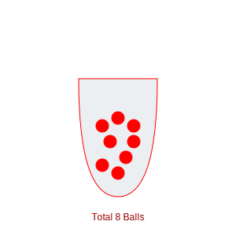
Total balls = 3 + 5 = 8.
(i) Favourable (Red) = 3. P(Red) = 3/8.
(ii) Favourable (Not Red) = Black = 5. P(Not Red) = 5/8.
(i) 3/8, (ii) 5/8
9. A box contains 5 red marbles, 8 white marbles and 4 green marbles. One marble is taken
out of the box at random. What is the probability that the marble taken out will be (i) red ? (ii) white ?
(iii) not green?
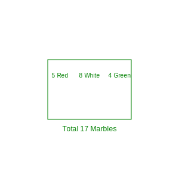
Total marbles = 5 + 8 + 4 = 17.
(i) Red = 5. P(Red) = 5/17.
(ii) White = 8. P(White) = 8/17.
(iii) Not Green = Red + White = 5 + 8 = 13. P(Not Green) = 13/17.
(i) 5/17, (ii) 8/17, (iii) 13/17
10. A piggy bank contains hundred 50p coins, fifty ₹ 1 coins, twenty ₹ 2 coins and ten ₹ 5
coins. If it is equally likely that one of the coins will fall out... find probability that coin (i) will be
a 50p coin? (ii) will not be a ₹ 5 coin?
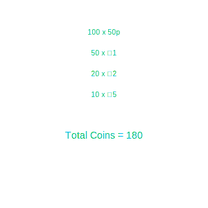
Total coins = 100 + 50 + 20 + 10 = 180.
(i) 50p coins = 100. P(50p) = 100/180 = 5/9.
(ii) Not ₹ 5 coin = 180 - 10 = 170. P(Not ₹ 5) = 170/180 = 17/18.
(i) 5/9, (ii) 17/18
11. Gopi buys a fish from a shop for his aquarium. The shopkeeper takes out one fish at
random from a tank containing 5 male fish and 8 female fish. What is the probability that the fish taken out
is a male fish?
Total fish = 5 + 8 = 13.
Male fish = 5.
P(Male) = 5/13.
5/13
12. A game of chance consists of spinning an arrow which comes to rest pointing at one of
the numbers 1, 2, 3, 4, 5, 6, 7, 8... What is the probability that it will point at (i) 8 ? (ii) an odd
number ? (iii) a number greater than 2 ? (iv) a number less than 9 ?
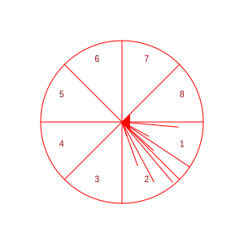
Total outcomes = 8.
(i) Pointing at 8: Only 1 outcome (8). P(8) = 1/8.
(ii) Odd numbers: 1, 3, 5, 7. Count = 4. P(Odd) = 4/8 = 1/2.
(iii) Greater than 2: 3, 4, 5, 6, 7, 8. Count = 6. P(>2) = 6/8 = 3/4.
(iv) Less than 9: All 1 to 8. Count = 8. P(<9)=8/8=1.
(i) 1/8, (ii) 1/2, (iii) 3/4, (iv) 1
13. A die is thrown once. Find the probability of getting (i) a prime number; (ii) a
number lying between 2 and 6; (iii) an odd number.

Outcomes: {1, 2, 3, 4, 5, 6}. Total = 6.
(i) Prime (2, 3, 5). Count = 3. P(Prime) = 3/6 = 1/2.
(ii) Between 2 and 6 (3, 4, 5). Count = 3. P(Between 2-6) = 3/6 = 1/2.
(iii) Odd (1, 3, 5). Count = 3. P(Odd) = 3/6 = 1/2.
(i) 1/2, (ii) 1/2, (iii) 1/2
14. One card is drawn from a well-shuffled deck of 52 cards. Find the probability of
getting: (i) a king of red colour (ii) a face card (iii) a red face card (iv) the jack of hearts (v) a
spade (vi) the queen of diamonds.

Total = 52.
(i) King Red (Hearts, Diamonds). Count = 2. P = 2/52 = 1/26.
(ii) Face cards (J, Q, K in 4 suits). Count = 12. P = 12/52 = 3/13.
(iii) Red face cards (6). P = 6/52 = 3/26.
(iv) Jack of Hearts (1). P = 1/52.
(v) Spade (13). P = 13/52 = 1/4.
(vi) Queen of Diamonds (1). P = 1/52.
1/26, 3/13, 3/26, 1/52, 1/4, 1/52
15. Five cards—the ten, jack, queen, king and ace of diamonds, are well-shuffled with
their face downwards. One card is then picked up at random. (i) What is the probability that the card is
the queen? (ii) If the queen is drawn and put aside, what is the probability that the second card picked
up is (a) an ace? (b) a queen?
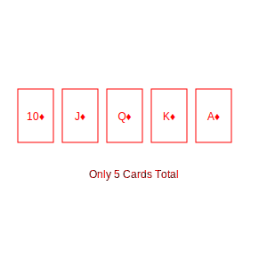
Total = 5.
(i) Queen (1 card). P(Queen) = 1/5.
(ii) Queen put aside. Total remaining = 4.
(a) Ace (1 card). P(Ace) = 1/4.
(b) Queen (0 cards left). P(Queen) = 0.
(i) 1/5, (ii)(a) 1/4, (ii)(b) 0
16. 12 defective pens are accidentally mixed with 132 good ones. One pen is taken out
at random. Determine the probability that the pen taken out is a good one.
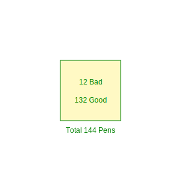
Total = 12 + 132 = 144.
Good pens = 132.
P(Good) = 132/144 = 11/12.
11/12
17. (i) A lot of 20 bulbs contain 4 defective ones. One bulb is drawn at random. What
is the probability that this bulb is defective? (ii) Suppose drawn bulb is not defective/not replaced.
Now one bulb drawn. Probability not defective?
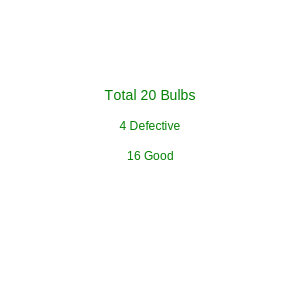
(i) Total 20. Defective 4. P(Defective) = 4/20 = 1/5.
(ii) Bulb drawn is good (non-defective). Remaining Total = 19. Remaining Good = 16 - 1 =
15.
P(Not Defective) = 15/19.
(i) 1/5, (ii) 15/19
18. A box contains 90 discs which are numbered from 1 to 90. If one disc is drawn at
random from the box, find the probability that it bears (i) a two-digit number (ii) a perfect square
number (iii) a number divisible by 5.
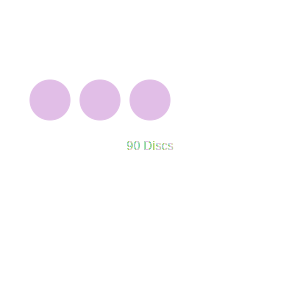
Total = 90.
(i) Two-digit (10 to 90). Count = 90 - 9 = 81. P = 81/90 = 9/10.
(ii) Perfect squares (1, 4, 9, 16, 25, 36, 49, 64, 81). Count = 9. P = 9/90 = 1/10.
(iii) Divisible by 5 (5, 10... 90). Count = 18. P = 18/90 = 1/5.
9/10, 1/10, 1/5
19. A child has a die whose six faces show the letters: A, B, C, D, E, A. The die is
thrown once. What is the probability of getting (i) A? (ii) D?
Total = 6.
(i) A appears twice. P(A) = 2/6 = 1/3.
(ii) D appears once. P(D) = 1/6.
(i) 1/3, (ii) 1/6
20. Suppose you drop a die at random on the rectangular region... What is the
probability that it will land inside the circle with diameter 1m?
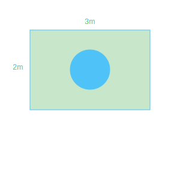
Area of Rectangle = 3 × 2 = 6 m².
Area of Circle (d=1, r=0.5) = π(0.5)² = 0.25π m².
Probability = Area Circle / Area Rectangle = 0.25π / 6 = π/24.
π/24
21. A lot consists of 144 ball pens of which 20 are defective... The shopkeeper draws
one pen at random. What is the probability that (i) She will buy it? (ii) She will not buy it?
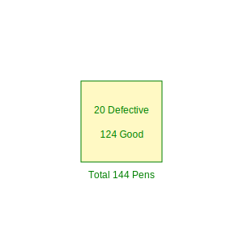
Total = 144. Defective = 20. Good = 124.
(i) She buys good pens. P(Buy) = 124/144 = 31/36.
(ii) She won't buy defective. P(No Buy) = 20/144 = 5/36.
(i) 31/36, (ii) 5/36
22. Two dice, one blue and one grey, are thrown at the same time... Complete the table
for sum of two dice.
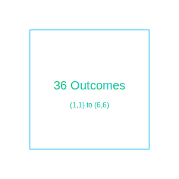
Total outcomes = 36.
Sum 2: (1,1) -> 1/36.
Sum 3: (1,2), (2,1) -> 2/36.
Sum 4: (1,3), (2,2), (3,1) -> 3/36.
Sum 5: 4/36. Sum 6: 5/36. Sum 7: 6/36.
Sum 8: 5/36. Sum 9: 4/36. Sum 10: 3/36. Sum 11: 2/36. Sum 12: 1/36.
Refer to pattern above.
23. A game consists of tossing a one rupee coin 3 times... Hanif wins if all the
tosses give the same result... Calculate the probability that Hanif will lose the game.

Outcomes: HHH, HHT, HTH, THH, TTH, THT, HTT, TTT. Total = 8.
Win cases (Same result): HHH, TTT. Count = 2.
Lose cases: 8 - 2 = 6.
P(Lose) = 6/8 = 3/4.
3/4
24. A die is thrown twice. What is the probability that (i) 5 will not come up either
time? (ii) 5 will come up at least once?

Total = 36.
(ii) 5 at least once: (1,5), (2,5), (3,5), (4,5), (5,5), (6,5), (5,1), (5,2), (5,3),
(5,4), (5,6). Count = 11.
P(5 at least once) = 11/36.
(i) 5 not come up = 1 - P(at least once) = 1 - 11/36 = 25/36.
(i) 25/36, (ii) 11/36
25. Which of the following arguments are correct and which are not? (i) If two coins
are tossed... there are three possible outcomes - two heads, two tails or one of each. Therefore, for
each of these outcomes, the probability is 1/3. (ii) If a die is thrown... odd number or an even number.
Therefore P(odd) = 1/2.

(i) Incorrect. Outcomes are HH, HT, TH, TT (4 outcomes). P(One of each) = 2/4 = 1/2, not
1/3.
(ii) Correct. Outcomes 1,3,5 (Odd) and 2,4,6 (Even). Both are 3/6 = 1/2.
(i) Incorrect, (ii) Correct